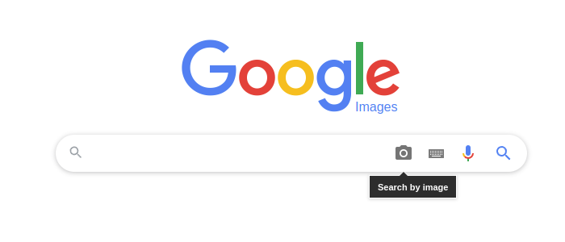
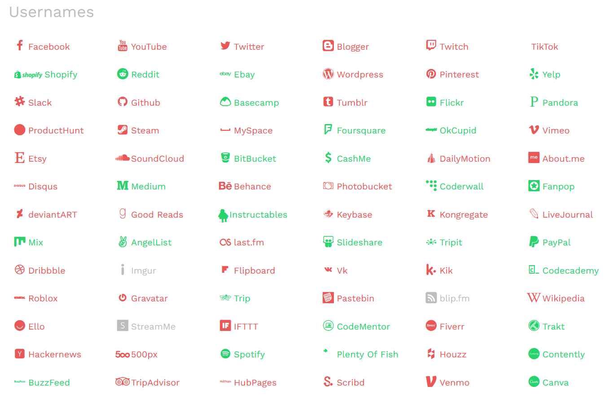

Za udeležence
Za izvajalce
Trainees Edition
Trainers Edition
MODUL 16: ORODJA IN TEHNIKE PREVERJANJA
Opis modula
Glavni namen tega modula je razložiti orodja in metode, ki se lahko uporabljajo za preverjanje.
Sekundarni namen je usmerjati izvajalce usposabljanja, ki želijo vsebino tega modula uporabiti pri usposabljanju svojih udeležencev.
S tema ciljema so predstavljena orodja in metode, ki se lahko uporabljajo pri preverjanju, skupaj s smernicami o tem, kako poučevati to temo.
Udeleženci, ki bodo uspešno zaključili ta modul, bodo znali:
- razlikovati med pojmoma preverjanje dejstev in verifikacija
- razumeti pomen preverjanja
- razumeti štiri ključne elemente, ki jih je treba obravnavati pri preverjanju
- uporabljati metode preverjanja slik in videoposnetkov ter uporabljati njihova orodja
- uporabljati metode preverjanja lokacije in uporabljati orodja
- uporabljati potrebne metode in orodja za preverjanje katerega koli računa v družbenih medijih
- uporabljati potrebne metode in orodja za preverjanje katerega koli spletnega mesta
- uporabljati metode za odkrivanje botov in trolov ter uporabljati potrebna orodja
Poleg tega bodo izvajalci izobraževanj, ki bodo uspešno zaključili ta modul, lahko pokazali razumevanje, kako poučevati različna orodja in tehnike preverjanja na podlagi vsebine (kot so slika, videoposnetek, lokacija, račun družbenega medija, spletna stran).
Struktura modula
Ta modul je sestavljen iz naslednjih delov:
- Opis modula (cilji, opis vsebine in učni rezultati)
- Struktura modula
- Smernice za udeležence usposabljanja
- Smernice za izvajalce usposabljanja (kako se pripraviti, metode za uporabo in nasveti za izvajalce usposabljanja)
- Vsebina (študijsko gradivo in vaje)
- Kviz
- Viri (reference in priporočeni viri ter videoposnetki)
Glavni cilji modula, opis vsebine in učni rezultati so pojasnjeni v delu Opis modula. Smernice za udeležence usposabljanja vključujejo navodila in predloge za udeležence izobraževanja. Smernice za izvajalce usposabljanja vodijo izvajalce usposabljanja skozi različne faze usposabljanja in vsebujejo nasvete, ki bi lahko bili koristni pri poučevanju predmeta. Vsebina vključuje vsa študijska gradiva in vaje, povezane z vsebino. Kviz vključuje vprašanja z več možnostmi izbire in/ali resnična/nepravilna vprašanja, s katerimi lahko udeleženci usposabljanja preverijo svoj napredek. Viri vsebujejo dve komponenti: reference in priporočene vire za nadaljnje branje in študij. Reference so seznam virov, navedenih v vsebinskem delu. Priporočeni viri so sestavljeni iz seznama dodatnih virov in videoposnetkov, ki jih priporočamo za branje in gledanje, da bi se naučili več o temi.
Smernice za udeležence usposabljanja
Od udeležencev izobraževanja se pričakuje, da bodo prebrali besedilo, si ogledali priporočene videoposnetke in izvedli vaje. Za dodatne informacije lahko poiščejo predlagane vire. Po končanem študiju vsebine učencem priporočamo, da opravijo kviz za oceno svojega napredka. Po potrebi lahko ponovno pregledajo študijsko gradivo.
Smernice za izvajalce usposabljanja
Smernice za izobraževalce vključujejo predloge in nasvete o tem, kako predstaviti vsebino tega modula odraslim.
Priprava
Priporočamo pripravo predstavitve (PowerPoint/Prezi/Canva), obogatene z vizualnim gradivom (slike in videoposnetki) in jasnimi primeri. Predlagamo tudi, da primere in vaje iz tega modula prilagodite vprašanjem, ki so bolj znana dejanski ciljni skupini. Izbira lokalnih primerov (specifičnih za posamezno državo) v zvezi z aktualnimi ali dobro znanimi vprašanji pomaga ponazoriti določeno točko. Prav tako pomaga pritegniti pozornost udeležencev usposabljanja. Bolj kot so primeri znani in priljubljeni, bolje bo sporočilo posredovano.
Kako začeti
Na začetku lahko uporabite kratek kviz (3 do 5 vprašanj) v programu Kahoot ali vprašanja z Mentimetrom, da udeležence pritegnete k temi. Uporablja se lahko kot motivacijsko orodje in tudi kot orodje za preverjanje obstoječega znanja udeležencev o temi. Nekateri primeri vprašanj so lahko naslednji: Kaj je preverjanje? Ali uporabljate kakšna orodja za preverjanje?
Učne metode
Med usposabljanjem se lahko kombinirajo različne učne metode. Na primer:
- predavanje
- diskusija
- delo v skupinah
- samorefleksija
Nasveti za izobraževalca
Ogrevanje
Učinkovit način vključevanja udeležencev in določanja skupnih pričakovanj o tem, kaj se bodo naučili, je postaviti nekaj predhodnih vprašanj o temi. To lahko storite s skupinskim delom, tako da udeležence usposabljanja pozovete k razpravi in zbiranju idej, lahko pa tudi individualno, tako da vsakega udeleženca prosite, naj svoje ideje zapiše na samolepilne lističe. Dejavnost se lahko izvede na naslednji način:
- Vprašajte udeležence usposabljanja, ali so na družbenih medijih naleteli na kakšno vsebino (sliko, besedilo, videoposnetek itd.), za katero dvomijo o njeni točnosti.
- Ko naletijo na sumljivo vsebino, jih lahko vprašate, ali poskušajo to vsebino preveriti.
- Lahko jih vprašate, katere ukrepe sprejmejo, ko poskušajo preveriti sumljivo vsebino.
Predstavitev učnih ciljev
Jasno je treba opredeliti cilj učne ure (to so orodja in metode, ki jih je mogoče uporabiti za preverjanje). Po ogrevalnih vprašanjih bo lažje pojasniti cilje.
Predstavitev učnih vsebin
Med predstavljanjem vsebine poskrbite za interakcijo z udeleženci in jih spodbudite k aktivnemu sodelovanju.
- Pri usposabljanju za ta modul je pomembno, kdo je ciljna skupina. Veščine preverjanja namreč zahtevajo učinkovito uporabo računalnika ali mobilnih naprav in iskalnih orodij. Takšne tehnične spretnosti se lahko razlikujejo glede na različne dejavnike (kot so starost, stopnja izobrazbe). Na primer, starejši odrasli bodo morda težko uporabljali metode in orodja za preverjanje, če ne morejo učinkovito uporabljati računalnika ali mobilnih naprav in iskalnih orodij. Zato lahko takšne udeležence usposabljanja usposobimo za uporabo preprostejših orodij (kot so Google in njegova podorodja). Nasprotno pa bodo udeleženci usposabljanja (kot so univerzitetni študenti) z učinkovitejšimi spretnostmi pri uporabi ustreznih orodij morda potrebovali bolj poglobljeno znanje o metodah in orodjih za preverjanje, kot je na voljo. V tem primeru se lahko uporabijo viri pod naslovom Priporočeni viri.
- Za učinkovito poučevanje orodij in metod preverjanja je treba dati prednost praksi orodij in metodam s strani udeležencev usposabljanja. Če je mogoče, je treba vnaprej pripraviti praktična vprašanja/študije primerov, udeleženci usposabljanja pa morajo biti sposobni odgovoriti na ta vprašanja z uporabo orodij in metod, ki so se jih naučili pri pouku.
- Med prakso v skupini lahko pripravnike vprašate, kje imajo težave. Na ta način se bo jasneje razumelo, katerih delov predmeta ne razumejo v celoti. Te teme je mogoče ponoviti in obogatiti primere, povezane s temo.
- Pri razlagi teme je treba vključiti primere iz vsakdanjega življenja.
- Uporabljajo se lahko tako lokalni kot mednarodni primeri. To bo udeležencem usposabljanja pomagalo pri usvajanju teme.
Zaključek
Naredite kratek povzetek učne ure in postavite nekaj vprašanj, ki bodo pomagala razbrati najpomembnejša sporočila, ki jih želite posredovati.
Pri tem so vam lahko v pomoč naslednja vprašanja:
- Vprašajte udeležence usposabljanja, kateri so elementi, ki jih je treba obravnavati pri preverjanju.
Ob zaključku se prepričajte, da udeleženci usposabljanja razumejo, da obstajajo številne metode in orodja, ki jih je mogoče uporabiti za preverjanje različnih vrst vsebin.
Vsebina: Orodja in tehnike preverjanja
Uvod
Preden podamo informacije o orodjih in metodah preverjanja, je koristno pojasniti, kaj preverjanje pomeni in zakaj je pomembno.
Kaj sta verifikacija in preverjanje dejstev?
Verifikacija in preverjanje dejstev sta dve različni novinarski praksi, ki se pogosto uporabljata izmenično. Čeprav se zdi, da sta ta dva pojma tesno povezana, imata nekaj razlik, ki lahko včasih povzročijo zmedo (Mantzarlis, 2015; Silverman, 2020b). Danes, vzporedno s širjenjem problema napačnih/dezinformacij, ti pojmi niso več le novinarske prakse, temveč so se spremenili v veščine, ki bi jih moral imeti vsak državljan na osnovni ravni.
Verifikacija je postopek, s katerim se oceni točnost novice, preden ta postane "novica". Posebej se osredotoča na vsebine, ki jih ustvarjajo uporabniki. Več pozornosti namenja zanesljivosti vira trditve (Mantzarlis, 2015, 2018). Preverjanje dejstev pa je proces, ki poteka po objavi in primerja javno objavljeno trditev z zanesljivimi in verodostojnimi viri. Osredotoča se tudi na logiko, skladnost in kontekst trditve (Mantzarlis, 2015). Dejansko lahko rečemo, da se je preverjanje dejstev iz tradicionalne radiodifuzije bistveno premaknilo na področje političnega novinarstva. Z drugimi besedami, preverjanje dejstev v sedanjem pomenu se vse bolj osredotoča na nadzor nad izjavami politikov in drugih javnih osebnosti (Silverman, 2020b).
Po drugi strani pa je razkrivanje dejstev podmnožica verifikacije in zahteva določen sklop veščin, ki so skupne preverjanju (Mantzarlis, 2018). V primerih, ko lažnih informacij ni mogoče preprečiti, je pomembno, da se lažne informacije ovrže. Jasna razlaga, zakaj je informacija napačna in kaj je dejansko res, zagotavlja, da je razkrinkavanje učinkovito. Če razblinjanje ni podrobno predstavljeno, se lahko napačne/dezinformacije ohranijo (Lewandowsky et al, 2020, str. 4).
Mantzarlis, 2018, p. 83
Pred preverjanjem vsebine se je treba prepričati, da je povezana z dogodkom, ki se je dejansko zgodil (Urbani, 2019, str. 10). Če dogodka, kot je naveden v vsebini, ni, preverjanje te vsebine ne bo imelo smisla. Zato je treba za preverjanje točnosti podane trditve poiskati dokaze, povezane s to trditvijo. Ker na primer osebna mnenja temeljijo na občutkih, mislih in idejah ljudi, so subjektivna, zato jih ni mogoče preveriti.
Pomembnost preverjanja
Dejstvo, da so pametni telefoni postali del našega življenja vzporedno z razvojem tehnologije, je vsakomur omogočilo enostavno snemanje videoposnetkov, deljenje in razširjanje teh vsebin, ki jih je ustvaril neposredno. Zlasti razširjena uporaba platform družbenih medijev je zagotovila takšno okolje za vse, ki znajo uporabljati nekatera osnovna orodja, kot so pametni telefoni ali računalniki. Ljudje lahko nekatere vsebine, vredne objave, ustvarijo in delijo tudi s svojih računov v družbenih medijih. Ko gre za vsebine, vredne objave, imajo lahko od takih vsebin, ki jih ustvarjajo uporabniki, koristi tudi novičarske organizacije in platforme (Wardle, n. d., str. 25-26). Vendar je pri tem treba upoštevati tveganje, da lahko vsebina namerno ali nenamerno vsebuje napačne informacije. Nekateri ljudje na primer ustvarijo lažne spletne strani ali račune v družbenih medijih, manipulirajo s slikami ali videoposnetki ali delijo napačno označene vsebine iz starih novic, da bi pomagali zavajati novičarske organizacije in javnost (Wardle, n.d., str. 26). Zlasti v času kriz in izrednih razmer (kot so naravne nesreče, teroristični napadi, nesreče) so lahko objave ljudi napačno zapomnjene ali napačno povezane in imajo lahko omejeno perspektivo (Buttry, n.d., str. 16). Uporaba teh vsebin in njihova delitev s strani drugih uporabnikov povzročata širjenje napačnih informacij. Pravzaprav so spletne platforme v ospredju okolij, kjer se lažne novice in dezinformacije širijo najširše in najhitreje (Vosoughi, Roy in Aral, 2018, str. 1146). Zato ima preverjanje zelo pomembno vlogo v boju proti problemu napačnih/dezinformacij, ki lahko pomembno vplivajo na življenje ljudi (Wardle, n. d., str. 26).
Verifikacija je pomembna veščina, ki jo je mogoče opraviti z uporabo brezplačnih spletnih orodij in tradicionalnih novinarskih tehnik. Pri preverjanju vsebin, ki jih ustvarjajo uporabniki, nobena tehnologija ne more zagotoviti 100-odstotnega samodejnega preverjanja. Po drugi strani pa zgolj tradicionalne raziskovalne tehnike in človeško oko niso dovolj. V idealnem primeru je treba obe metodi uporabiti skupaj, da bi našli pravilen odgovor (Wardle, n. d., str. 27).
Ko gre za vsebine, ki jih ustvarjajo uporabniki, ali informacije, pridobljene prek družbenih medijev, obstajajo štirje ključni elementi, ki jih je treba še posebej preveriti (Urbani, 2019, str. 11; Silverman in Tsubaki, n.d., str. 98-100; Wardle, n.d., str. 27):
- Poreklo: Preverjanje avtentičnosti vsebine (Ali gre za izvirni račun ali vsebino?). Iskanje različnih različic vsebine, poskus doseganja prve različice, preučevanje drugih povezanih vsebin.
- Vir: Vrhunska vsebina, ki jo je mogoče najti na spletni strani (Kdo je ustvaril/posredoval vsebino?). Preučevanje osebe/organizacije/računa, ki je ustvarila, naložila ali delila vsebino. Preučevanje drugih računov, ki so morda povezani s temi osebami/računi.
- Datum: Preverjanje datuma dogodka (Kdaj je bila vsebina ustvarjena?).
- Lokacija: Preverjanje lokacije dogodka (Kje je bila ustvarjena vsebina/račun/spletno mesto? Kje je bila vsebina zajeta/najdena?).
Poleg tega lahko razumevanje motivacije za ustvarjanje/deljenje vsebine s poizvedbami, kot so zakaj je bil ustvarjen račun/spletno mesto ali zakaj je bila vsebina zasežena, prispeva k postopku preverjanja drugih elementov (Urbani, 2019, str. 50). Ko poskušamo preveriti izvirni vir in vsebino z informacijami, kot so izvor, vir, datum in kraj, je treba informacije primerjati in razpravljati o njihovi točnosti z navzkrižnim preverjanjem različnih virov (Silverman in Tsubaki, n. d., str. 98).
Obstaja nekaj virov, ki lahko služijo kot vodilo, zlasti o tem, kako ugotoviti, ali je informacija, posredovana kot novica, lažna ali ne:
- Kako ustaviti lažne novice (Kiely & Robertson, 2016; IFLA, 2017)
- Ne pustite se preslepiti: 7 preprostih korakov (News Literacy Project, 2021)
Vir: IFLA, 2017 (CC BY 4.0)
Vir: News Literacy Project, 2021
Kadar posameznik nima časa za preverjanje ali kadar njegove veščine preverjanja ne zadoščajo za preverjanje obravnavane vsebine, se lahko posvetuje s knjižničarji in platformami za preverjanje, ki se profesionalno ukvarjajo s preverjanjem (IFLA, 2017; Kiely in Robertson, 2016). Poleg tega je mogoče pred začetkom postopka preverjanja naleti na sumljivo vsebino najprej preveriti, ali je bila ta vsebina že preverjena. V ta namen se lahko uporabi orodje Google Fact Check Explorer.
Vir: Google Fact Check Explorer
Pri postopku preverjanja je lahko treba preučiti več različnih podrobnosti, odvisno od vsebine, ki jo je treba preveriti. V tem okviru obstaja vrsta korakov, kot so preverjanje slik in videoposnetkov, preverjanje lokacije, preverjanje sumljivega računa v družbenih medijih, preverjanje spletnega mesta, odkrivanje botov in trolov.
Preverjanje slik in videoposnetkov
Fotografije in videoposnetki imajo pomembno mesto v komunikaciji, zlasti v družbenih medijih, saj so prepričljivi in privlačni. Poleg tega, da lahko ustvarite katero koli sliko ali videoposnetek, ki je vključen v komunikacijo, ga lahko tudi zelo preprosto spremenite. Zaradi teh razmer so fotografije in videoposnetki postali pomembno orodje, ki ga je mogoče uporabiti za napačne informacije in dezinformacije. Fotografije in videoposnetki, ki so zavajajoči in zlasti uporabljeni zunaj konteksta, so pogostejši (glej 1. del, modul 2) (Vis, Faulkner in Guy, 2020).
Preverjanje slik
Postopek preverjanja slik se ne osredotoča le na statične slike, temveč tudi na fotografije, sestavljene slike, meme, grafike in posnetke zaslona (Vis, Faulkner in Guy, 2020). Sledenje viru slike običajno vključuje iskanje informacij, kot so, kdo je naložil ali posnel sliko itd. (Barot, n.d., str. 37). Za iskanje teh informacij se lahko uporabi povratno iskanje slik. S povratnim iskanjem slik je mogoče preveriti tudi informacije, kot so, ali je bila slika že deljena, na katerih platformah je bila deljena, v kakšnem kontekstu in kdo jo je delil.
Pri preverjanju fotografij je mogoče poskušati priti do odgovorov tako, da se osredotočimo na naslednjih pet vprašanj (Urbani, 2019):
- Ali si ogledujete izvirno različico?
- Ali veste, kdo je posnel fotografijo?
- Ali veste, kje je bila fotografija posneta?
- Ali veste, kdaj je bila fotografija posneta?
- Ali veste, zakaj je bila fotografija posneta?
Ta vprašanja je mogoče zasledovati na naslednji način:
Vir: Urbani, 2019
Poleg teh vprašanj bo postopek preverjanja podobe podprlo tudi naslednjih pet vprašanj v zvezi s spraševanjem o podobah na družbenih medijih (Vis, Faulkner in Guy, 2020).
- Kaj je to?
- Kaj prikazuje?
- Kdo ga je izdelal?
- Kaj je pomenila?
- Kaj pomeni?
Prva tri vprašanja se tako kot druga vprašanja o preverjanju bolj ukvarjajo z izvorom in virom podobe. Zadnji dve vprašanji nas vodita k razmišljanju o pomenu podobe in k spraševanju o različnih pomenih, ki so nastali med uporabo podobe (Vis, Faulkner in Guy, 2020). Ti dve vprašanji nam lahko pomagata prepoznati in oceniti zavajajočo vsebino, napačen kontekst in podobne uporabe, s katerimi se srečujemo v okviru informacijske motnje (glej 1. del, modul 2).
Metodo povratnega iskanja slik lahko uporabimo za raziskovanje izvora in vira slik, prav tako lahko primerjamo podobne slike in preverimo podatke EXIF slike. Podatki EXIF so lahko vodilo pri preverjanju, ali so na sliki informacije o datumu. Poleg tega je treba raziskati tudi podatke o lokaciji slike.
Povratno iskanje slik
Povratno iskanje slik lahko opravite na platformah, kot so Google Images, Yandex Image Search, Bing in TinEye. Za izvedbo povratnega iskanja slik se slika ali povezava (URL) do slike poišče na platformah za iskanje slik. Med tem iskanjem se preveri, ali na internetu obstaja ujemanje s to sliko. Če obstaja ujemanje, se prikaže na seznamu rezultatov. Če so prejete različne povezave do iste slike, je mogoče pregledati različne velikosti slik na teh povezavah. Na splošno se pričakuje, da bo slika z največjo ločljivostjo/velikostjo dosegla izvirni vir. Ali je vir izviren, lahko razumete tako, da ga primerjate s sliko, ki jo imate (Barot, n.d., str. 37; Silverman & Tsubaki, n.d., str. 98-99). Možnosti povratnega iskanja slik v Googlu ni mogoče prikazati na vseh mobilnih napravah. To možnost iskanja je mogoče uporabiti, če je ustrezna povezava odprta v namizni različici brskalnika. Če želite povratno iskanje slik z mobilno napravo, lahko izberete orodja, kot so Yandex Image Search, Bing in TinEye.
Primer: V novici v družabnih medijih je navedeno, da je spodnjo sliko delila Britney Spears. Preučimo točnost tega podatka s pomočjo povratnega iskanja slik.
Vir: Google Images:

Vir: Google Images
Vir: Google Image Search
Iskanje opravimo tako, da v iskalno polje vstavimo povezavo do slike, ki jo želimo poiskati. Zdi se, da je med rezultati tudi račun družbenega omrežja z isto sliko.
Vir: Google Image Search Results
Vir: Britney Spears’ Twitter Account
Ko kliknete na račun družbenega omrežja na seznamu rezultatov, se vidi, da ima račun modro kljukico. Tako je videti, da je račun preverjen in pripada Britney Spears. Poleg tega je na voljo nekaj dodatnih informacij, povezanih z osebo, kot so spletna povezava, informacije o lokaciji in datum ustvarjanja računa.
Vir: Britney Spears’ Tweet
Pri pregledu tvitov, ki jih je račun delil, je razvidno, da je slika, ki je predmet naše raziskave, med deljenimi vsebinami.
Vir: Britney Spears’ Tweet
Medtem ko je Googlova funkcija povratnega iskanja slik občasno nezadostna, lahko Yandex zagotovi boljše rezultate (Toler, 2019). Poleg storitev Google Images, Yandex Image Search, TinEye in Bing lahko podobne slike na več platformah hkrati iščete tako, da z desnim klikom na fotografijo v brskalniku uporabite razširitev RevEye Chrome.
Vir: Povratno iskanje slik RevEye
Obstajajo tudi primeri, ko so iskalniki nezadostni pri povratnem iskanju slik. Ta orodja niso vedno uspešna pri iskanju slik, zlasti v družbenih omrežjih, kot so Twitter, Instagram, Facebook (Zadrozny, 2020).
Podatki EXIF
Druga podrobnost, ki jo je treba uporabiti pri preverjanju slike, je preverjanje, ali je na sliki kakšna montaža. To lahko preverimo v podatkih EXIF slike (Barot, n.d., str. 38; Silverman & Tsubaki, n.d., str. 99). Za preverjanje podatkov EXIF se lahko uporabijo orodja, kot so Foto Forensics, View and Remove EXIF Online, Jeffrey's Image Metadata Viewer.
Foto Forensics: Uporablja se lahko za razumevanje montirane slike. Z njim lahko nekdo poišče EXIF (metapodatke) slike in si ogleda analizo stopnje napake (angl. error level analysis oz. ELA) slike. Ta platforma lahko zagotovi tudi informacije, kot so model fotoaparata, časovni žig slike in dimenzije izvirne slike (Silverman & Tsubaki, n.d., str. 99).
Primer: Oglejmo si trditev, da je na fotografiji grška zastava, ki visi na mošeji v Dimetoki.
Trditev, da je na fotografiji grška zastava, ki visi na mošeji v Dimetoki
Trditev, da je bila grška zastava izobešena na minaretu osmanske mošeje v Dimetoki, se je hitro razširila v turških medijih. Vendar ta trditev ne drži. Izvirna slika je iz leta 2015, grška zastava pa je bila dodana pozneje. Ko fotografijo, ki jo je servirala agencija DHA, poiščemo s povratnim iskanjem slik, pridemo do vsebine iz leta 2015, objavljene na spletnem mestu e-evros.gr, ki oddaja iz regije Evros z grško razširitvijo.
Podrobnejši pregled fotografije pokaže, da svetloba in predlog zastave, ki je bila dodana pozneje, nista združljiva s preostalo fotografijo. Na montirani fotografiji je zastava videti precej umetna in ni pod običajnim kotom. Tudi analiza na portalu Fotoforensics potrjuje, da je bila slika prirejena (Teyit, 2020, 1. junij).
Vir: Trditev, da je na fotografiji grška zastava, obešena na mošeji v Dimetoki - analiza stopnje napake (ELA) na portalu Fotoforensics
Večina platform družbenih medijev, kot so Twitter, Facebook in Instagram (razen Flickr), ob nalaganju slik na svojo platformo izbriše večino metapodatkov, ki jih vsebujejo slike (Barot, n.d.). Zato je na teh platformah težko dostopati do podatkov EXIF slik.
Podobnost
Poleg povratnega iskanja slik in preverjanja informacij EXIF obstajajo tudi orodja, kot je Face++, ki povedo, kakšna je verjetnost, da dve fotografiji pripadata isti osebi (Zadrozny, 2020). Ta orodja so lahko še posebej koristna pri raziskovanju profilne fotografije na računu v družbenem omrežju.
Primer: Ali je ta fotografija posneta na shodu za Trumpa v Washingtonu po volitvah?
Ko so bili 6. januarja 2021 potrjeni končni izidi predsedniških volitev v Združenih državah Amerike, so nekateri Trumpovi podporniki, ki so protestirali v prestolnici Washington, prebili varnostni sistem in vstopili v poslopje kongresa. Zaradi oboroženih incidentov pred stavbo in v njej je bila v prestolnici razglašena policijska ura. In začela je krožiti fotografija s trditvijo v kitajščini in angleščini, ki naj bi prikazovala množico na shodu.
Povratno iskanje slik v Googlu je pokazalo, da fotografija dejansko prikazuje shod proti nasilju z orožjem, ki je marca 2018 potekal v Washingtonu in ga je objavil časnik Washington Post. Pripisana je bila fotoreporterju Salwanu Georgesu. Še isti dan je Georges prek svojega računa na Twitterju ovrgel lažno trditev o svoji fotografiji (Teyit, 2021, 7. januar).
Informacije o lokaciji
Za potrditev lokacije in časa nastanka fotografije je mogoče poiskati namige, kot so registrske/številčne tablice na vozilih, vremenske razmere, znamenitosti, vrsta oblačil, oznake/napisi, prepoznavna trgovina ali stavba, vrsta terena/okolja na posnetku (Barot, n.d.).
Vse to lahko pomaga pridobiti pomembne informacije, ko gre za fotografske podrobnosti. Preverimo jih lahko s pomočjo orodij, kot so Google Maps, Google Street View, Yandex Maps, Google Earth (Silverman in Tsubaki, n.d., str. 102). Podrobnejše informacije o preverjanju lokacije se nahajajo pod naslovom "Preverjanje lokacije".
Preverjanje videoposnetkov
Spremembe je mogoče vnesti tako v videoposnetke kot v slike. Zlasti videoposnetki, ki jih ustvarijo uporabniki, se lahko pojavijo v prvotni obliki (Browne, n.d., str. 47). Pri preverjanju videoposnetkov je tako kot pri slikah mogoče do odgovorov priti tako, da se osredotočimo na naslednjih pet vprašanj (Urbani, 2019):
- Ali gledate izvirno različico?
- Ali veste, kdo je posnel videoposnetek?
- Ali veste, kje je bil posnet videoposnetek?
- Ali veste, kdaj je bil posnetek posnet?
- Ali veste, zakaj je bil posnetek posnet?
Vir: Urbani, 2019
Odgovore na sorodna vprašanja lahko poiščete, kot je prikazano na sliki. Na tej stopnji lahko metapodatki, povezani z videoposnetkom, pomagajo tudi pri pridobivanju podrobnosti o izvirnem viru, datumu in lokaciji (Browne, n. d., str. 47).
V postopku preverjanja videoposnetka je prvi korak spraševanje o izvoru videoposnetka. Videoposnetki običajno vsebujejo opise, oznake, komentarje in podobne identifikacijske informacije. Na podlagi teh informacij je mogoče oblikovati različne ključne besede. Z iskanjem po teh ključnih besedah je mogoče najti najstarejše ustrezne videoposnetke. Če na primer iščete v YouTubu, lahko videoposnetke ustrezno razvrstite tako, da v meniju "filtri" izberete možnost "datum nalaganja". Tako lahko dostopate do najstarejših ustreznih videoposnetkov. Če so identifikacijske informacije v videoposnetku v tujem jeziku, lahko za prevod teh informacij uporabite Googlov prevajalnik in podobna prevajalska orodja (Browne, n. d., str. 48).
Vir: YouTube SearchZa iskanje najstarejše različice videoposnetka lahko uporabite tudi povratno iskanje slik. S povratnim iskanjem s sličicami videoposnetka na platformah, kot sta Google Images in TinEye, lahko dostopamo do različic, v katerih so bile fotografije ali slike prvič uporabljene (Browne, n. d., str. 49). Za informacije o povratnem iskanju slik glej "Preverjanje slik".
InVID je vtičnik za spletni brskalnik, ki omogoča razdelitev videoposnetkov na kadre, iskanje teh kadrov v več iskalnikih z metodo povratnega iskanja slik, pregledovanje kadrov in slik s povečavo ter uporabo različnih filtrov za analizo mirujočih slik (Gregory, 2020). Ko prilepite povezavo v iskalno vrstico in začnete iskati, se prikaže predogledna slika videoposnetka. Z iskanjem teh slik z orodji za povratno iskanje slik je mogoče ugotoviti, kje drugje je bil videoposnetek morda objavljen (Lytvynenko, 2020).
Vir: InVID Verification Plugin
Drugi element, ki ga je treba preučiti pri preverjanju videoposnetka, je vir videoposnetka. Z drugimi besedami, raziskati je mogoče, iz katerega vira je prišel videoposnetek in kdo ga je naložil na platformo/platforme.
Najprej je treba na hitro raziskati račun, ki je naložil videoposnetek v skupno rabo. Podrobnosti o tem, kako raziskati račun v družbenih medijih, najdete v poglavju "Preverjanje računa v družbenih medijih". Pri raziskovanju sledi in spletne zgodovine osebe/računa, ki je delila videoposnetek, lahko uporabite tudi naslednja vprašanja (Browne, n. d., str. 49; Silverman in Tsubaki, n. d., str. 101):
- Ali so opisi videoposnetkov dosledni?
- Ali imajo videoposnetki datume?
- Če videoposnetki na računu uporabljajo logotip, ali je ta logotip v različnih videoposnetkih uporabljen na enak način?
- Ali oseba, ki je videoposnetek naložila, uporablja videoposnetke iz novic in drugih računov na YouTubu ali nalaga samo vsebine, ki jih ustvarijo uporabniki?
- Ali so v imenih videoposnetkov v opisih videoposnetkov navedene razširitve datotek, kot sta .AVI ali .MP4? (To nam lahko pokaže, da je bil videoposnetek naložen neposredno z napravo).
- Ali je v opisu videoposnetka v storitvi YouTube navedeno "Naloženo prek aplikacije YouTube Capture"? (To lahko kaže, da je bil videoposnetek posnet s pametnim telefonom).
Pri pridobivanju dodatnih informacij o viru si lahko pomagate tudi z drugimi računi vira, ki so lahko povezani. Pri tem si je koristno ogledati naslednje:
- Vsaka vsebina, ki jo ustvarijo uporabniki, je prepoznana z edinstveno kodo, ki je navedena v naslovu URL. Na primer v omrežjih Facebook in YouTube se ta koda nahaja med znakom "v=" v naslovu URL in naslednjim znakom "&". Če želite najti to kodo, lahko preverite stanje drugega povezanega računa tako, da si ogledate platforme, kot so Twitter, Facebook.
- V video profilu pošiljatelja lahko preverite, ali ima še kakšen drug naslov ali podatke o svojem računu.
- Preverite lahko, kako dolgo so povezani računi aktivni in ali vsebujejo določene informacije, kot so nedavna lokacija, dejavnosti, zanesljivost, pristranskost ali program pošiljatelja.
Odgovori na vsa ta vprašanja dajo splošno predstavo o zanesljivosti vira (Browne, n. d., str. 50; Silverman & Tsubaki, n. d., str. 100). Pri preverjanju videoposnetka je izjemno pomembno preveriti tudi vsebino videoposnetka. V ta namen je mogoče najprej poiskati lokacijske informacije o tem, kje je bil videoposnetek narejen in posnet. V ta namen si lahko ogledate nasvete, navedene pod naslovom preverjanje lokacije (glej "Preverjanje lokacije").
Druga točka, ki jo lahko preverite v zvezi z vsebino videoposnetka, so informacije o datumu. Lažje je preveriti datume videoposnetkov načrtovanega dogodka, kot so akcija, politični shod itd. Ker lahko obstajajo tudi drugi videoposnetki in fotografije takšnih dogodkov, je mogoče s primerjavo pridobiti podporne informacije. Vendar je datume bolj nejasnih videoposnetkov precej težko preveriti. Med postopkom preverjanja datuma za videoposnetke in slike je mogoče preveriti naslednje informacije (Browne, n. d., str. 52-53; Silverman in Tsubaki, n. d., str. 100-101):
- V različnih virih novic je mogoče poiskati novice o dogodkih, ki so se zgodili tistega dne.
- Elemente, kot so čas, televizijski zasloni, časopisne strani, je mogoče iskati za prepoznavanje datuma ali časa na fotografijah in videoposnetkih.
- Videoposnetke in slike je mogoče iskati na platformah, kot so YouTube, Google, TinEye. Tako je mogoče preveriti, ali je bila obstoječa vsebina že prej deljena na različnih platformah. Vendar je treba na tem mestu opozoriti, da YouTube kot začetni čas nalaganja temelji na pacifiškem časovnem območju (GMT-8). To je lahko zaradi časovne razlike zavajajoče.
- Preverite kraj, kjer se je zgodil dogodek v videoposnetku, in vremenske razmere tistega dne. Preverite lahko, ali so si vremenske napovedi in druge objave o istem dogodku podobne. V ta namen se lahko za iskanje uporabi iskalnik Wolfram Alpha.
Primer: "Kakšno je bilo vreme v Kaliforniji, ZDA, 8. marca 2011?"

Z združitvijo vseh pridobljenih sledi in dokazov je mogoče oceniti, ali je kaj nesmiselnega. Po drugi strani pa je mogoče nekatere tehnične preglede opraviti tudi s programsko opremo za urejanje videoposnetkov (VLC Media Player, Avidemux Video Editor, Vegas Pro itd.), kadar je v videoposnetkih kar koli, kar ni smiselno (Browne, n. d., str. 52).
Globoki ponaredki
Globoki ponaredki so nove oblike avdiovizualne manipulacije, ki omogočajo ustvarjanje realističnih simulacij obraza, glasu ali dejanj osebe (Gregory, 2020). Z drugimi besedami, vključevanje tehnologij umetne inteligence v manipulacije na slikah in videoposnetkih se imenuje globok ponaredek (angl. deepfake). Deepfake v osnovi temelji na tehniki strojnega učenja, ki se imenuje generativno adverzijsko omrežje (Generative Adversarial Network – GAN). GAN se za prepoznavanje slike usposobi z nizom algoritmov. Na ta način postane zmožen ustvariti ponarejene slike z učenjem resničnih značilnosti (Metz, 2017; Schwartz, 2018; Gregory, 2020).
To lahko povzroči resno škodo ljudem, saj ustvari videz, da so storili nekaj, česar niso rekli ali storili. Lahko na primer uporabi obraz osebe za ustvarjanje spolnih slik in videoposnetkov brez privolitve. Poleg tega je zaskrbljujoča tudi možnost, da se deepfake uporabi za dezinformiranje (Gregory, 2020).
V nadaljevanju so navedene podrobnosti, ki jih je treba še posebej preučiti, ali gre za globok ponaredek ali ne (Gregory, 2020):
- Opazne motnje čela/čelne linije ali stalno gibanje obraza
- Pomanjkanje podrobnosti pri zobeh
- Izjemno gladka koža
- Odsotnost gibanja z mežikanjem
- Pri govorcu ni opaziti trenutnih gibov, gest in mimike
- Nedoslednosti v tem, kdaj se oseba obrne ali premakne glavo
Čeprav globokega ponaredka ni vedno lahko odkriti, je mogoče z uporabo določenih namigov in metod vizualnega/video preverjanja (podobnost, obratno iskanje slik) razumeti, ali gre za globok ponaredek (glej "Preverjanje slik" in "Preverjanje videa") (Gregory, 2020; Marconi in Daldrup, 2018).
Primer: Videoposnetek ne prikazuje odziva Donalda Trumpa, ko nekdo zakriči "Allahu Akbar".
Leta 2018 je bilo v videoposnetku, ki je bil objavljen na družbenih omrežjih, navedeno, da se je Donald Trump odzval s strahom, ko je med njegovim govorom nekdo iz množice zakričal "Allahu Akbar".
Če želite preveriti videoposnetek, ga najprej razčlenite na ključne kadre in izvedite povratno iskanje slik v Googlu. Iskanje pa nas pripelje do več različic videoposnetka, ki so jih leta 2016 objavili različni mediji. In na teh avtentičnih posnetkih ni slišati besed "Allahu Akbar". Po navedbah časopisa Washington Post posnetek prikazuje odziv Donalda Trumpa na proti-trumpovskega protestnika, ki je 12. marca 2016 med njegovim zborovanjem v mestu Dayton v Ohiu skočil na oder (Teyit, 2018, 6. avgust).
Preverjanje lokacije
Drugi element, ki ga je mogoče preučiti v postopku preverjanja, so podatki o lokaciji vsebine. Pri tem je treba najprej preveriti, ali vsebina vsebuje informacije o lokaciji. Platforme, kot so Flickr, Picasa, Instagram in Twitter, svojim uporabnikom ponujajo možnost dodajanja lokacije. Informacijo o lokaciji je mogoče poskusiti potrditi s primerjavo lokacije vsebine z obstoječimi satelitskimi fotografijami in fotografijami, ki vsebujejo samodejne informacije o lokaciji (Silverman in Tsubaki, n. d., str. 101). Za to se lahko uporabijo Google Maps, Google Street View, Yandex Maps, Bing Maps, Google Earth, Wikimapia, Geofeedia in podobne platforme. Pri primerjanju se lahko za preverjanje preverijo naslednje značilnosti (Silverman & Tsubaki, n. d., str. 101):
- podrobnosti o ulicah (kot so znaki/napisi na stavbah, ulični znaki, smerne table, oglasni panoji),
- pokrajine (kot so gorske verige, drevesne linije, pečine, reke),
- stavbe in znamenitosti (kot so cerkve, minareti, stadioni, mostovi),
- vremenske razmere (na primer dnevna svetloba ali senca za določitev približnega časa),
- registrske tablice,
- zastave,
- oblačila,
- govorjeni jezik (zlasti v videoposnetkih lahko preverite skladnost naglasov in narečij z geografskim položajem).
Če se tuji jezik uporablja v podrobnostih na ulici, kot so znaki/napisi na stavbah, ulične oznake, smerne table, oglasni panoji, lahko za prevod uporabite Google Translate in podobna prevajalska orodja (Silverman in Tsubaki, n. d., str. 101).
Za ujemanje podrobnosti v vsebini s fotografijami s samodejnimi informacijami o lokaciji se lahko uporabijo fotografije iz Google Street View ali Google Maps (Higgins, 2015; Silverman & Tsubaki, n. d., str. 101).
Primer: Recimo, da je v novicah, na katere smo naleteli, slika ali videoposnetek, domnevno povezan z dogodkom, ki se je zgodil na trgu Celimontana v bližini Koloseja v Italiji. Ko želimo preveriti informacije o lokaciji v novici, lahko uporabimo Google Street View.
Najprej v Google Maps poiščite "Piazza Celimontana":
Vir: Google Maps Search for “Piazza Celimontana, Roma, Italy”
Vir: Google Maps Search for Piazza Celimontana, Roma, Italy
Na zemljevidu je razvidno, da je trg Celimontana v bližini Koloseja. S povečavo pogleda lahko preučite podrobnosti o ulici (na primer znane stavbe, zastave).
Vir: Google Street View for Piazza Celimontana, Roma, Italy
Vir: Google Street View for Piazza Celimontana, Roma, Italy
Google Earth ponuja tudi pretekle satelitske slike. Zato je mogoče pogled na teren v Google Earth uporabiti tudi za stare fotografije in videoposnetke (Silverman & Tsubaki, n. d., str. 101).
Vir: Google Earth search for Piazza Celimontana, Roma, Italy

Vir: Google Earth view for Piazza Celimontana, Roma, Italy
Čeprav družbena omrežja, kot so Twitter, Facebook in Instagram, uporabnikom omogočajo dodajanje lokacij, pogosto pridobivajo metapodatke (razen Flickr). Namesto tega se lahko uporabijo platforme, kot je Geofeedia, za določanje podatkov GPS iz mobilne naprave, ki nalaga podatke (Silverman in Tsubaki, n. d., str. 98-99).
Poleg uporabe teh tehnik in orodij je mogoče preveriti tudi, ali uradne novičarske organizacije objavljajo podobne slike, ali pa so na družbenih omrežjih objavljene slike, ki so jih s te lokacije naložili drugi. Tako si je mogoče točko dogodka ogledati z različnih zornih kotov in zagotoviti zanesljivost posnetkov (Barot, n. d., str. 40).
Preverjanje računov v družbenih omrežjih
Za preiskovanje računov v družabnih medijih je mogoče uporabiti več pristopov in orodij.
Uporabniška imena in identiteta
Ko preverjate, ali je uporabniški račun pravi, najprej preverite, ali ima modro kljukico. Če je ob imenu računa modra kljukica, to pomeni, da je račun odobrila ustrezna platforma (na primer Facebook, Twitter, Instagram) (Silverman in Tsubaki, n. d., str. 99-100). Ko se z miško pomaknete nad modro kljukico, se prikaže opis, da gre za preverjen račun. Če se takšna razlaga ne prikaže, je bila morda modra kljukica tam dodana s programom Photoshop (Wardle, n. d., str. 28). Platforme imajo določena merila za odobritev računov na platformah družbenih medijev, kot so izvirnost, edinstvenost, učinkovitost in prepoznavnost (Instagram help center, 2021; Twitter help center, 2021). Za katero platformo želite, da odobri vaš račun, se lahko prijavite tako, da preučite merila, ki jih določa izbrana platforma.
Vir: Example of a Verified Account
Medtem ko nekateri ljudje na vsaki platformi uporabljajo drugo uporabniško ime, imajo nekateri uporabniki raje isto uporabniško ime na različnih platformah. Zaradi tega je treba iskano uporabniško ime preučiti na več različnih spletnih mestih (Zadrozny, 2020). Za iskanje uporabniških imen in identitet je mogoče uporabiti naslednja orodja in platforme: Google, Namechk, Namecheckr, Spokeo, Webmii, LinkedIn, haveibeenpwned.com, Dehashed.com itd.
Primer: Recimo, da raziskujemo, ali račun družbenih omrežij, na katerega smo naleteli, pripada Britney Spears in ali ima Britney Spears druge račune.
Google: Uporabniška imena ali osebne identifikacijske podatke lahko najprej poiščemo v Googlu. Če Google indeksira kakršne koli informacije o uporabniku, lahko te informacije pomagajo pri izsleditvi tega uporabnika.
Vir: Google Search
Vir: Google Search Results for Britney Spears
Namechk in Namecheckr: Z njima je mogoče preveriti, ali uporabniško ime ali e-pošta obstajata na različnih platformah (Zadrozny, 2020).
Primer: V tem primeru lahko na platformah Namechk in Namecheckr poiščemo uporabniško ime "britneyspears", ki ga Britney Spears uporablja na svojem računu na Instagramu:
Vir: Namechk Search for the username “britneyspears”

Vir: Namechk Search Results for the username “britneyspears”
Platforme, ki uporabljajo uporabniško ime "britneyspears", so kot rezultat iskanja prikazane kot "registrirane" (rdeča barva) ali "nedostopne". Tako je mogoče nadzorovati druge povezane račune družbenih omrežij iskane osebe.
Vir: Namecheckr Search Results for the username “britneyspears”
Spokeo: Poiščite osebo po imenu, e-pošti, telefonu ali uporabniškem imenu (Verification handbook, n.d.).
Primer: Poiščimo v Spokeo pod imenom Britney Spears:
Vir: Spokeo Search for Britney Spears
Vir: Spokeo Search Results for Britney Spears
Z iskanjem je mogoče priti do informacij, kot so geografske regije ljudi z imenom Britney Spears, njihovi naslovi, telefonske številke, e-pošta in imena nekaterih drugih ljudi, s katerimi so v stiku.
Vir: Spokeo Advanced Search for Britney Spears
Iskanje v Spokeo lahko filtrirate glede na potrebne informacije (npr. starost, država, regija) z uporabo možnosti naprednega iskanja.
Webmii: Spletne povezave lahko iščete po imenu osebe (Verification handbook, n.d.).
Primer: Ko v Webmii iščemo po imenu Britney Spears, lahko vidimo povezave do platform, na katerih je oseba prisotna na spletu.
Vir: Webmii Search for Britney Spears
Vir: Webmii Search Results for Britney Spears
LinkedIn: Identiteto in zgodbo osebe si lahko ustvarite s pregledom njene delovne zgodovine in povezav na LinkedInu (Verification handbook, n.d.).
Primer: Naredimo iskanje na omrežju LinkedIn, da bi pridobili informacije o identiteti Marie Resse, ene od prejemnic Nobelove nagrade za mir leta 2021, in si ogledali njene poklicne poslovne povezave:
Vir: LinkedIn
Vir: LinkedIn Search for Maria Ressa
Rezultati iskanja kažejo, da obstaja več računov z istim imenom. Med temi računi je mogoče ugotoviti, kateri račun vsebuje namige o novinarki Marii Ressi.

Vir: LinkedIn Search Results for Maria Ressa
Ko kliknete na račun na prvem mestu, je razvidno, da so informacije o novinarki Marii Ressi, kot so država, jezik, dogodki, skladne s podatki o osebi.
Vir: LinkedIn Account of Maria Ressa
Poleg tega spletna mesta haveibeenpwned.com in Dehashed.com preiskujejo kršitve varnosti podatkov, ki vključujejo podatke uporabnikov. Uporabljata se lahko tudi za preverjanje e-poštnega naslova ali telefonske številke. Uporabljajo se lahko tudi platforme, kot sta Pipl in Skopenow, ki zagotavljata plačljive storitve in se uporabljata za iskanje oseb, ki živijo v Združenih državah Amerike (Zadrozny, 2020).
Odnosi
S tem, s kom se oseba povezuje na spletu, je mogoče izvedeti veliko o njenem življenju in nagnjenjih. V ta namen je mogoče poiskati najstarejše sledilce in prijatelje računa (Zadrozny, 2020). Z orodjem, imenovanim TweetBeaver, je mogoče poiskati povezave med velikimi računi ter pregledati časovnico in všečke manjših računov. Za uporabo orodja TweetBeaver morate imeti račun Twitter in se vanj prijaviti.
Primer: Preglejmo uporabniško ime na računu Twitter, ki naj bi pripadal Britney Spears. Z orodjem TweetBeaver lahko preverimo naslednje stanje imetnika tega računa s Twitter računom sestre Britney Spears, Jamie Lynn Spears.
Vir: TweetBeaver
Med različnimi možnostmi v TweetBeaverju je izbrano naslednje stanje dveh računov. Nato se v ustrezna polja vnesejo imena računov, ki jih je treba preveriti, in opravi poizvedba.
Vir: Checking Britney Spears and her sister's Twitter following status with the TweetBeaver
Kot rezultat iskanja je razvidno, da računa sledita drug drugemu.

Vir: Britney Spears and her sister's Twitter following status
Poleg tega lahko z naprednim iskanjem v Twitterju pridete do prvih tvitov računa ali pa pregledate tvite, poslane v določenem časovnem obdobju. Z uporabo funkcij filtriranja (beseda, leto itd.) v naprednem iskanju Twitterja je mogoče izvajati različna iskanja.
Vir: Twitter Advanced Search
Uporabniki lahko včasih izbrišejo svoje objave v družbenih medijih (na primer tvite ali objave na Facebooku). Če so delitve, ki vsebujejo sumljivo vsebino, zabeležene na spletnih mestih, ki zagotavljajo arhivske storitve, kot so Wayback Machine, archive.today, lahko do izbrisanih objav dostopate prek teh spletnih mest.
FotografijeFotografije profila so še en element, ki pomaga pri preiskavi računa v družbenih medijih in preverjanju identitete lastnika računa. S povratnim iskanjem slik po profilni fotografiji je mogoče pridobiti različne namige. Za podrobnejše informacije glejte "Preverjanje slik".
Preiskava spletnega mestaSpletne strani lahko ljudje, ki se ukvarjajo z medijsko manipulacijo, uporabljajo za namene, kot so ustvarjanje dohodka, zbiranje osebnih podatkov (e-pošta in drugi) ter ustvarjanje varnega spletnega prostora (Silverman, 2020a). Poleg tega je lahko vsebina na spletnih straneh povezana s sumljivo vsebino, ki se deli v družbenih medijih. Zato bo morda treba preveriti besedilne, vizualne, video in podobne vsebine na spletnih mestih.
Podobna situacija, kot je izbris vsebin, ki se delijo na platformah družbenih medijev, se pojavlja tudi na spletnih mestih. Zaradi izbrisa povezave do katere koli vsebine (besedila, slike, videoposnetka ali vseh) na spletnem mestu do te vsebine ni mogoče dostopati. Če so povezave do spletišč ali vsebine na teh spletiščih zabeležene na spletiščih, ki zagotavljajo arhivske storitve, kot sta Wayback Machine, archive.today, je do izbrisane vsebine mogoče dostopati prek teh spletišč. Arhivske storitve ne omogočajo le dostopa do strani/vsebin, ki imajo lahko kakovost dokazov, temveč tudi preprečujejo neposredne povezave do spletišč/računov, ki širijo lažne informacije. Prek teh orodij je mogoče spremljati tudi spreminjanje spletne strani skozi čas (Silverman, 2020a), Wayback Machine omogoča sledenje razlikam s primerjavo različnih različic določene strani, shranjenih ob različnih časih (Graham, 2021).
Vir: Archived pages of “https://datajournalism.com/” website on Wayback Machine
Prvi korak k preverjanju spletnega mesta je, da si ustvarimo predstavo o njegovi vsebini (Silverman, 2020a).
- Da bi razumeli, o čem je spletno mesto, si lahko ogledate razdelek "O spletnem mestu", kdo ga upravlja, njegov namen in druga pojasnila na spletnem mestu. Če pojasnila ni, lahko to štejemo za sumljiv znak o spletnem mestu. To daje vtis, da je bilo spletišče morda narejeno v naglici ali da se skrivajo nekatere informacije o lastništvu in statusu objave. Poleg tega lahko v razdelku "O spletnem mestu" preverite, ali je ime katere koli osebe, pravne osebe ali podjetja omenjeno v drugih delih spletnega mesta. Če so imena omenjena, lahko preverite, ali so te informacije na različnih straneh dosledne.
- Če so na spletnem mestu objavljeni članki, je treba biti pozoren na podatke o avtorju in na to, ali vsebujejo povezave. Če obstajajo povezave, na katere je mogoče klikniti, je mogoče preveriti, ali vodijo do avtorjeve biografije, računov v družabnih omrežjih ali drugih povezanih strani z informacijami o avtorju.
- Preveri se lahko, ali obstaja povezava do računov družbenih medijev, povezanih s spletnim mestom. Te povezave se običajno nahajajo v obliki ikon platform družbenih medijev, kot so Facebook, Twitter, Instagram. Ko se z miško pomaknete nad to ikono, lahko v spodnjem levem kotu brskalnika vidite, na kateri naslov URL preusmerja. Ker identitete računov družbenih medijev, ki pripadajo na hitro ustvarjenim spletnim mestom, niso v celoti izpolnjene, je povezava objavljena kot facebook.com/ brez uporabniškega imena.
- Za preverjanje izvirnosti vsebine (besedilne, vizualne in podobne), predstavljene na spletnem mestu, je mogoče preveriti, ali je vsebina kopirana od drugod, ali se na spletnem mestu delijo napačne/zavajajoče informacije ali pa se poskuša izpostaviti določen program/temo.
Druga stvar, ki jo lahko preverite o spletnem mestu, so osnovni podatki o registraciji spletnega mesta, kot sta ime domene in datum njene vzpostavitve. V nekaterih primerih je mogoče pridobiti informacije o osebi ali institucijah, ki so plačale za registracijo domenskega imena. Za to je mogoče uporabiti platforme, kot so who.is, whois.net ali ICANN LookUp. Za iskanje domenskih imen je mogoče uporabiti tudi orodje, imenovano DomainBigData. Če so pri iskanju domenskega imena podatki prijavitelja prikazani kot "Registration confidential", "WhoisGuard Protected" ali "Perfect Privacy LLC", to pomeni, da je zasebnost domenskega imena zaščitena. Po drugi strani so vidni datum zadnje registracije domenskega imena, kdaj bo poteklo, naslov IP strežnika, kjer je stran nameščena (Silverman, 2020a).
Primer: Poglejmo podatke o imenu domene spletnega mesta z imenom "The Information".
Vir: Search for “The Information” web site on who.is
Rezultat strani prikazuje besedno zvezo "Perfect Privacy LLC" v razdelku s podatki o registracijskem zavezancu. V tem primeru se razume, da je zaupnost domenskega imena zaščitena.
Vir: Search result for “The Information” web site on who.is
Poleg vsebine in vira je mogoče pri preverjanju spletnih mest za bolj poglobljeno analizo pregledati tudi izvorno kodo spletnega mesta (Silverman, 2020a).
Primer: Ne, Putin ni prepovedal prodaje alkohola v Rusiji za 11 dni.
Na novičarskih spletnih straneh je bilo navedeno, da bo v Rusiji med 11-dnevnim državnim praznikom, ki bo maja 2021, prepovedana prodaja alkohola.
Pri analizi je mogoče ugotoviti, da odlok, ki so ga objavile oblasti, ne vsebuje nobene prepovedi prodaje alkohola, prav tako takšna prepoved ni bila omenjena v drugih vladnih izjavah.
Iskanje po ključnih besedah nas pripelje do računa z imenom "Panorama" kot vira trditve. V opisnem delu računa, ki ima na Twitterju več kot 50 tisoč sledilcev, je bilo navedeno, da ustvarja parodične oddaje. To je primer, da je v nasprotju s splošnim prepričanjem mogoče parodične vsebine pogosto zamenjati za dejstva in si celo najti mesto v naslovnicah (Teyit, 2021, 30. april).
Boti in troli
Splošne informacije o botih in trolih so zajete v modulu 4. Ta modul vključuje informacije o prepoznavanju botov in trolov.
Kaj je bot?
"Bot je programska aplikacija, ki lahko samodejno opravlja naloge, ki ji jih dodelijo ljudje" (Wild & Godart, 2020). Boti, ki se pogosto omenjajo v razpravah v javnem prostoru in so dejavni na družbenih omrežjih, kot so Facebook, Twitter, LinkedIn, so družbeni boti. V teh družbenih omrežjih se lahko uporabljajo za širjenje določenih ideoloških sporočil in pogosto za ustvarjanje videza, da ima določena tema, oseba, vsebina ali hashtag veliko število podpornikov. Bote družbenih omrežij na splošno najdemo v treh glavnih kategorijah (Wild in Godart, 2020):
- Načrtovani bot
- Opazovalni bot
- Ojačevalni bot
V okviru dezinformacij pogosto naletimo na ojačevalne bote. Namen ojačevalnih botov je oblikovanje javnega mnenja na internetu. Uporabljajo se lahko tudi za prikazovanje, da imajo posamezniki in organizacije več sledilcev, kot jih dejansko imajo. Omrežje ojačevalnih botov se lahko uporablja tudi za vplivanje na širjenje hashtagov, širjenje povezave ali vizualne vsebine, pošiljanje neželene pošte, diskreditacijo nekoga na spletu ali prikazovanje te osebe kot sporne ali ostro kritizirane (Wild in Godart, 2020).
Poleg tega je mogoče naleteti na račune družbenih medijev, ki kažejo mešanico naravnih in umetnih dejavnosti, ki jih včasih upravljajo samodejni, včasih pa pravi ljudje. Take račune imenujemo tudi kiborgi (Wild in Godart, 2020).
Kako prepoznati bote?
Medtem ko je nakup in ustvarjanje botov razmeroma enostavno, je ustvarjanje in vzdrževanje zapletenega omrežja botov, ki se obnaša podobno kot človek, težje (Wild in Godart, 2020). Razvitih je nekaj orodij, ki pomagajo ugotoviti, ali je račun bot. Vendar je treba upoštevati, da ocena, pridobljena z orodjem, ne predstavlja jasnega rezultata in ne sme biti edina točka, na kateri temelji novica ali sklepanje. Ta orodja so lahko dobro izhodišče, vendar univerzalnega merila za 100-odstotno prepoznavanje botov ni. Prav tako še ni jasnega soglasja o tem, kako nekaj razvrstiti kot bot (Wild in Godart, 2020).
Botometer: Botometer je bil uveden kot skupni projekt Observatorija za družbene medije Univerze v Indiani in Inštituta za znanost o omrežju. "Botometer (prej BotOrNot) preverja aktivnost računa na Twitterju in mu dodeli oceno. Višja ocena pomeni, da je aktivnost bolj podobna botom" (Botometer, n.d.).
Vir: Botometer
Bot Sentinel: Zagotavlja javno zbirko podatkov o računih Twitterja v ZDA, ki se vedejo sumljivo. S to zbirko podatkov naj bi združili račune, ki nenehno kršijo pravila Twitterja, in jih prepoznali kot "problematične" (Bot Sentinel, 2021; Wild in Godart, 2020).
Vir: Bot Sentinel
Nedavno dodane račune, ki jih je treba pregledati in ugotoviti, ali so sumljivi ali ne, si lahko ogledate na spletnem mestu Bot Sentinel.
Vir: Recently added accounts on Bot Sentinel and their data
Poleg uporabe teh orodij za odkrivanje botov je pomembno tudi spremljanje umetnih dejavnosti v družbenih omrežjih. Da bi ujeli tipične signale sumljivih računov, ki prikazujejo samodejno vedenje na Twitterju ali drugih družbenih omrežjih, lahko preučimo naslednje točke (Wild in Godart, 2020):
- Nerealna profilna slika: Za odkrivanje bot računov in umetnih dejavnosti lahko upoštevamo te nasvete o profilni fotografiji (Wild in Godart, 2020):
- odsotnost kakršne koli profilne fotografije
- uporaba ukradene fotografije na profilu ali
- uporaba risanih likov ali živali kot profilne slike
- Samodejno ustvarjena uporabniška imena: Vsako uporabniško ime na Twitterju je edinstveno. Zaradi tega boti običajno uporabljajo naslednja merila za ustvarjanje uporabniških imen, ki še niso bila uporabljena (Wild in Godart, 2020):
| "Uporabniško ime, ki mu sledi štirimestna številka" | "Dvanajst naključnih znakov, ki so lahko sestavljeni iz (a-z, A-Z in 0-9)" | "Katero koli ime, ki mu sledi naključna osemmestna številka, kar pomeni, da je bilo uporabljeno privzeto uporabniško ime, ki ga ustvari Twitter." |
| hero_2345 hero_3476 hero_9812 | fH23pGr50LaX 7At35kd89QwS Xr16xHW4n6DK | George89567438 Mary91827364 Peter25384128 |
- Dejavnosti na računu ne ustrezajo njegovi starosti: Če naletite na naslednje primere, lahko dvomite o računu. V tem primeru je treba podrobneje preučiti dejavnosti Twitter računa (Wild in Godart, 2020):
- če ima novo ustvarjen račun veliko število sledilcev ali
- če je novo ustvarjen račun v kratkem času objavil veliko tvitov ali
- če je star račun zelo aktiven, vendar ima malo sledilcev
- Sumljivi vzorci tvitanja: Ljudje imajo lahko določene preference glede dni in časa tvitanja. Vendar je malo verjetno, da bo oseba ob določenih dnevih dosledno objavljala, ob drugih pa molčala (Wild in Godart, 2020).
Kaj je trol?
"Trol je oseba, ki namerno sproža spletne konflikte ali žali druge uporabnike, da bi odvrnila pozornost in zasejala razdor z objavljanjem provokativnih ali ne tematskih prispevkov v spletni skupnosti ali družbenem omrežju. Njihov cilj je spodbuditi druge k čustvenemu odzivu in izničiti razpravo" (DFRLab, 2018).
Kako prepoznati trole
Troli pogosto prikazujejo profil, ki podpira in zagovarja ideološko usklajene lažne novice, se prepirajo z ljudmi, objavljajo žaljive komentarje za druge uporabnike in javne osebnosti, ne marajo določenih idej in ustrahujejo tiste, ki te ideje objavljajo (The Center for Information Technology and Society, n.d.).
Korake za odkrivanje računov botov je mogoče uporabiti tudi za račune, za katere se sumi, da so troli. Pri tem lahko informacije, kot so uporabljena profilna fotografija, število sledilcev, datum odprtja računa, vzorci deljenja, dajo predstavo o tem, ali je račun trol.
Primer: Kako daleč gredo lahko boti in troli?
Vedno pogosteje se pojavljajo boti in troli, ki se uporabljajo za nezaželeno pošto in blatenje aktivistov, zapiranje hashtagov, ki kritizirajo oblast, ter širjenje dezinformacij.
Boti, ki se uporabljajo za neželeno obveščanje o hashtagih v Mehiki
Tako kot v vseh državah se tudi v Mehiki na Twitterju uporabljajo hashtagi, s katerimi se opozarja na pomembna politična vprašanja. Hashtagi, kot so #YaMeCanse, #SobrinaEBN in #Acapulco, so na Twitterju hitro pridobili zagon in "trend".
(Tweets that aim to spam the #SobrinaEBN hashtag, Source: Sánchez, 2015, July 22)Kmalu po pojavu hashtagov je na tisoče uporabnikov začelo objavljati naključno vsebino. Raziskovalci so povedali, da je težko reči, kdo ali kaj stoji za napadom, vendar so jih preplavili udeleženci botov, ki so pošiljali neželeno pošto s hashtagi. Cilj je bil sprožiti Twitterjeve ukrepe proti neželeni pošti in umik hashtaga iz Trendovskih tem. Analiza omrežja kaže jasno razliko med pravimi in lažnimi hashtagi (Trewinnard, 2016, 11. februar).
Ali gre za dejavnost botov ali ne?
Po gozdnih požarih leta 2021 je v Turčiji več kot 270 gozdnih požarov zajelo 53 pokrajin, umrlo je 9 ljudi. Zaradi pomanjkanja vladnih ukrepov je postal viralen hashtag #HelpTurkey. Uradniki so dejali, da se je začel umetno, da bi bila Turčija videti "šibka". Toda analiza prvih 500 tisoč tvitov je pokazala, da je bilo širjenje akcij organsko. Obstaja več deset računov z več sledilci in preverjenih računov, zaradi katerih je kampanja postala množična. Tovrstni primeri kažejo, da lahko boti in troli povzročijo informacijsko zmedo ne le s svojimi dejavnostmi, temveč celo z mislijo, da obstajajo zaradi naših preteklih izkušenj (Teyit, 2021, 4. avgust).
Indijska restavracija se je zaradi trolov znašla na robu zaprtja
Shrina Begum, lastnica indijske restavracije, ni mogla razumeti razloga za telefonske klice, ki so jo obtoževali, da prodaja človeško meso, zato je začela slediti govoricam. Ugotovila je, da je spletna stran Channel23news.com objavila zgodbo, v kateri je trdila, da so restavracijo Karri Twist ujeli pri prodaji človeškega mesa in da je bil njen lastnik aretiran.
(The fake news story about the restaurant on the Channel23News.com)Ko je zgodba postala viralna, je spletna preiskava pokazala, da je lastnik spletne strani Channel23News.com in vsaj 18 drugih podobnih strani za potegavščine v evidenci registracije domen naveden kot "Korry Scherer". Ta spletna mesta vabijo ljudi, da si izmišljajo lažne novice in jih delijo na Facebooku, v 12 mesecih pa so na družbenem omrežju ustvarila več kot 13 milijonov vključitev (Silverman in Spary, 2017, 29. maj).
Študije primerov
Študija primera 1: Drevesa so bila izruvana, vendar iz drugega razloga
Spor med Indijo in Pakistanom se nadaljuje, po družbenih medijih pa krožijo različne trditve, ki zbujajo jezo in povečujejo napetost v obeh državah. 8. avgusta 2021 je po družbenih medijih zaokrožil videoposnetek s podnapisi, v katerih je bilo lažno navedeno, da v Pakistanu domačini izruvajo sadike, saj je sajenje dreves v nasprotju z islamom. Trditev se je začela širiti še hitreje, potem ko so jo politiki in javne osebnosti začeli deliti prek svojih preverjenih profilov na Twitterju.
Surendra Punia, član stranke Bharatiya Janata, ene od dveh glavnih političnih strank v Indiji, in nekdanji vojaški major, je na Twitterju objavil videoposnetek z besedilom, v katerem je trdil: "Imran Khan je v Pakistanu posnemal 'akcijo sajenja dreves' predsednika vlade Šri Modija, vendar so njegovi privrženci izruvali vsa drevesa, ker menijo, da je 'sajenje dreves proti islamu'.
Kmalu zatem se je v turških družbenih medijih začel širiti videoposnetek z enako trditvijo. Različni mediji so to trditev delili brez preverjanja dejstev, vendar z islamofobičnimi izjavami.
(Source: Caption, 2021, August 11)Najprej je treba ugotoviti, kje in kdaj so bili posnetki posneti. Prvi korak je, da za ključni kader iz viralnega videoposnetka izvedete povratno iskanje slik. To iskanje je pokazalo poročilo na pakistanski spletni strani Khabarnaamaa, ki je objavila posnetke zaslona iz istega videoposnetka in ga označila kot incident, o katerem so poročali na območju Bara Mandi v provinci Khyber.
Po navedbah novice se je incident zgodil, potem ko je pakistanski premier začel največjo akcijo za sajenje dreves v državi. Lastništvo zemljišča, na katerem je bil posnet viralni videoposnetek, je bilo sporno, stranke pa niso pridobile dovoljenja za sajenje dreves na zemljišču. Podrobnosti in izjave vladnih organov po incidentu je mogoče najti tudi z iskanjem po ključnih besedah na različnih spletnih straneh, kot so Pakistan Today, Dawn, The News in Samaa. Z iskanjem po ključnih besedah je mogoče najti tudi raziskave drugih platform za preverjanje dejstev, kot je Boomlive, platforma za preverjanje dejstev s sedežem v Indiji.
Skratka, čeprav je videoposnetek verodostojen, je napis, ki trdi, da so na njem islamski skrajneži izruvali drevesa, saj je sajenje dreves proti islamu, napačen. Prizadevanje za razumevanje konteksta je enako pomembno kot poznavanje ustreznih orodij za preverjanje dejstev. Preprosto iskanje po ključnih besedah je lahko metoda, ki lahko prepreči širjenje napačnih informacij (Teyit, 2020, 12. avgust).
Študija primera 2: Senzacionalna trditev o "ujgurski deklici za prodajo"
Videoposnetek, objavljen na družbenih medijih, s trditvijo, da kitajska komunistična partija na trgu prodaja ujgursko deklico, katere družina je bila zaprta. Ista trditev je bila deljena tudi v različnih jezikih.
(Podnapisi: Grozljiv škandal. Člani kitajske komunistične partije prodajajo majhne otroke iz Vzhodnega Turkistana, katerih starši so zaprti v taboriščih Prodajalec želi 200.000 juanov –Kupec: zelo veliko – Prodajalec: če vam je všeč, bom znižal ceno, kaj dajete? – Kupec: 20 juanov)
Ujguri so največja manjšinska etnična skupina v kitajski severozahodni provinci Xinjian. Kitajska je bila obtožena, da nad ujgurskim prebivalstvom izvaja zločine proti človečnosti. Čeprav Kitajska vse obtožbe zanika, vedno več podobnih trditev potuje po različnih državah in jezikih.
Povratno iskanje slik kaže, da se trditev širi tudi v drugih jezikih, kot sta arabščina in japonščina.
Oglejte si komentarje
V videoposnetku je slišati pogovor v kitajščini med dvema moškima glasovoma. Tudi nekateri zvoki namigujejo, da bi lahko bil posnetek posnet na prostem. Trditev je bila, da so pogovori iz kupčije o dekletu. V enem od komentarjev k japonski objavi je videoposnetek, na katerem se slišijo isti pogovori, vendar je slika drugačna.
Logotip TikTok, ki je viden v tem videoposnetku, in številke spodaj kažejo, da je bil videoposnetek deljen v kitajski različici aplikacije Douyin.
Videoposnetek je uporabnik delil s kodo "v15366798929" v aplikaciji Douyin. Besedilo lahko prevedete s pomočjo iskalnika slik Yandex. "你敢讲我就敢麦" besedilo na sliki se glasi: "Če si upaš govoriti, si ne upam jesti pšenice". Poleg tega je mogoče razumeti, da gre za pogovor iz kupčije, če podnapise v videoposnetku prevedemo s pomočjo orodja Google Lens. Na tej točki si lahko z orodjem za urejanje zvoka Audacity pomagamo pri primerjavi teh dveh zvočnih posnetkov in ugotovimo, da sta si podobna. Različne videoposnetke z enakim zvokom lahko najdete na spletnem mestu Twitter.

(Območje, označeno z rdečo barvo, so zvočni valovi izvirnega videoposnetka, območje, označeno z zeleno barvo, pa je zvok v zahtevanem videoposnetku.)
Podrobne informacije o dekletu v videoposnetku je mogoče najti tudi v komentarjih k objavam. Pisalo se je, da se je dekle usposabljalo za manekenko v provinci Guangdong. V drugem komentarju je mogoče videti profil dekličinega očeta z različnimi fotografijami otroka.
V domnevnem videoposnetku so tudi namigi, ki kažejo na to, da je deklica v šoli: kot drug otrok v majici z enakim logotipom in trofejami na knjižnih policah.
Pri preiskovanju trditev, povezanih s Kitajsko, je pomembno razmišljati divergentno in imeti v mislih orodja, ki lahko pomagajo premagati kulturne in jezikovne ovire (Teyit, 2020, 22. oktober).
Vaje
Vaja 1
Trditev: Fotografija, ki prikazuje udarec strele v obliki srca iz Francije. Povezava na trditev: https://archive.is/kQKTe Exercise 1 Verification Note: You should say "it is true" (for question 2) about the claim based on the fact-checking you've done. The following can be done for fact-checking:- A reverse image search shows Reddit and 9gag posts. “jeanyvesvilla.com” sign can be seen on the right side of the photograph shared on these websites.
- The address can’t be reached at the moment. However, the photographer’s Facebook page is still accessible when the name of Jean Yves Villa is searched.
- Among the other lightning photos shared, it is possible to reach the claim photo.
- According to the caption the image was shot by Jean-Yves Villa over the city of Sorgues near Avignon on July 31, 2016.
Exercise 2
Claim: The photo showing newborn babies were put to sleep outside to boost their immune systems in Soviet Russia Claim link: https://archive.is/IHuly Exercise 2 Verification Note: You should say "it is true" (for Question 2) about the claim based on the fact-checking you've done. The following can be done for fact-checking:- Reverse image search results show different posts on the subject. On some websites, explanations like “Children sleep outdoors after lunch at the maternity hospital in Moscow in 1958.” can be seen as well. (On some posts, an explanatory note written in Cyrillic can be seen on the bottom of the picture. The note can be translated with the help of the Yandex image search. (Yandex image search turns the texts in the pictures to a digital text))
- Keyword search results lead us to a website called Russia Beyond that shares stories related to culture, travel, education, language, and more in Russia. And the article named “Why did kids sleep in the freezing cold in Soviet kindergartens?” explains the story of the photographs and the cultural habit behind them. (“Dmitry Baltermants/MAMM/MDF” noted as the credit of the claim photo. Dimitry Balternants was a Soviet photojournalist. And the “MAMM/MDF” is the abbreviation for Multimedia Art Museum, Moscow. The source of the photo can be confirmed again by contacting the museum.)
Exercise 3
Claim: The picture shows the anti-mask meeting in London Exercise 3 Verification Note: You should say "it is false" (for Question 2) about the claim based on the fact-checking you've done. The following can be done for fact-checking:- Details to confirm if the photo is from London: (a) The text “..latz” on the sign in the left corner of the photo could be a hint for the location. (b) There are words that we can suspect are not in English, although what is written on other cards people hold is not fully understood.
- A reverse image search shows the website of a movement to which the signs on the sides of the banner belong. The original photo of the claim can be accessed on the site. From the “Alexanderplatz” subway sign in the original photo, it is understood that the photo is from a meeting in Berlin. The original banner reads “#unteilbar - Solidarität statt ausgrenzung” meaning “#indivisible- Solidarity instead of exclusion”.
- The point where the photo was taken can be found by examining the street views with the Alexanderplatz metro exits on Google Maps.
Kviz
Reference
Barot, T. (n.d.). Verifying images. In C. Silverman (Ed.), Verification handbook: An ultimate guideline on digital age sourcing for emergency coverage (p. 35-41).
Bot Sentinel. (2021). About.
Browne, M. (n.d.). Verification fundamentals: Rules to live by. Verifying video. In C. Silverman (Ed.), Verification handbook: An ultimate guideline on digital age sourcing for emergency coverage (p. 47-53).
Buttry, S. (n.d.). In C. Silverman (Ed.), Verification handbook: An ultimate guideline on digital age sourcing for emergency coverage (p. 15-18).
DFRLab. (2018, October 9). #TrollTracker: Bots, botnets, and trolls. In Medium.
Graham, M. (2021, May 5). Tips for using the Internet Archive’s Wayback Machine in your next investigation. Global Investigative Journalism Network.
Gregory, S. (2020). How to think about deepfakes and emerging manipulation technologies. C. Silverman (Ed.), Verification handbook: For disinformation and media manipulation. European Journalism Centre.
Higgins, E. (2015, July 25). Searching the Earth: Essential geolocation tools for verification. In Bellingcat.
IFLA. (2017). How to spot fake news.
Instagram help center. (2021). Verified badges.
Kiely, E. & Robertson, L. (2016). How to spot fake news. In FactCheck.org.
Lewandowsky, S., Cook, J., Ecker, U. K. H., Albarracín, D., Amazeen, M. A., Kendeou, P. … Zaragoza, M. S. (2020). The Debunking Handbook 2020. doi:10.17910/b7.1182
Lytvynenko, J. (2020). Monitoring for fakes and information operations during breaking news. C. Silverman (Ed.), Verification handbook: For disinformation and media manipulation. European Journalism Centre.
Mantzarlis, A. (2018). Module 5: Fact-checking 101. In C. Ireton and J. Posetti (Eds.), Journalism, fake news & disinformation: Handbook for journalism education and training (p. 81-95). France: UNESCO.
Mantzarlis, A. (2015, October 21). Will verification kill fact-checking?. In Poynter.
Marconi, F., & Daldrup, T. (2018, November, 15). How The Wall Street Journal is preparing its journalists to detect deepfakes. In NiemanLab.
Metz, C. (2017, November 4). Google's dueling neural networks ppar to get smarter, no humans required. In Wired.
News Literacy Project. (2021). Don’t get fooled: 7 simple steps.
Sánchez, A. I. (2015, July 22). Atacan bots hashtag #SobrinaEPN [Video ]. YouTube.
Schwartz, O. (2018, November 12). You thought fake news was bad? Deep fakes are where truth goes to die. In The Guardian.
Silverman, C. (2020a). Investigating websites. C. Silverman (Ed.), Verification handbook: For disinformation and media manipulation. European Journalism Centre.
Silverman, C. (2020b). Verification and fact checking. C. Silverman (Ed.), Verification handbook: For disinformation and media manipulation. European Journalism Centre.
Silverman, C. & Spray, S. (2017, May 29). Trolls are targeting Indian restaurants with a create-your-own fake news site. Buzzfeed.
Silverman, C. & Tsubaki, R. (n.d.). Creating a verification process and checklist(s). In C. Silverman (Ed.), Verification handbook: An ultimate guideline on digital age sourcing for emergency coverage (p. 97-103).
Teyit. (2021, January 7). Fotoğrafın 6 Ocak 2021 Washington DC protestolarından olduğu iddiası [Is this photo taken at a pro-Trump rally in Washington D.C. after the elections?]. Teyit.
Teyit. (2020, June 1). Fotoğrafın Dimetoka’daki camiye Yunanistan bayrağı asıldığını gösterdiği iddiası [The claim that the photo shows the Greek flag hanging on the mosque in Dimetoka]. Teyit.
Teyit. (2018, August 6). Videonun Donald Trump’ın 'Allahuekber' sesini duyunca verdiği tepkiyi gösterdiği iddiası [Video does not show the reaction of Donald Trump when someone shouts “Allahu Akbar”]. Teyit.
Teyit. (2021, April 30). Putin’in Rusya’da içki satışını 11 gün yasakladığı iddiası [No, Putin did not ban alcohol sales in Russia for 11 days]. Teyit.
Teyit. (2021, August 4). Vaka çalışması: #HelpTurkey etiketinin hikayesi [Case study: The story of the #HelpTurkey hashtag]. Teyit.
Teyit. (2020, August 12). Videonun Pakistan'da 'İslam'da haramdır' diye ağaç söküldüğünü gösterdiği iddiası [The claim that the video shows the removal of trees in Pakistan saying 'it is haram in Islam']. Teyit.
Teyit. (2020, October 22). Videonun Doğu Türkistanlı bir çocuğun pazarda satıldığını gösterdiği iddiası [The claim that the video shows a child from East Turkistan being sold in the market]. Teyit.
The Center for Information Technology and Society. (n.d.). How is fake news spread? Bots, people like you, trolls, and microtargeting.
Toler, A. (2019, December 26). Guide to using reverse image search for investigations. In Bellingcat.
Trewinnard, T. (2016, February 11). Sockpuppets and spambots: How states manipulate social networks. In First Draft.
Twitter help center. (2021). About verified accounts.
Urbani, S. (2019). Verifying online information. First Draft.
Verification handbook. (n.d.). Verification tools: verifying identity.
Vis, F., Faulkner, S. & Guy, H. (2020). Verifying and questioning images. C. Silverman (Ed.), Verification handbook: For disinformation and media manipulation. European Journalism Centre.
Vosoughi, S., Roy, D. ve Aral, S. (2018). The spread of true and false news online. Science, 359, 1146-1151. doi: 10.1126/science.aap9559
Wardle, C. (n.d.). Verifying user-generated content. In C. Silverman (Ed.), Verification handbook: An ultimate guideline on digital age sourcing for emergency coverage (p. 25-32).
Wild, J. & Godart, C. (2020). Spotting bots, cyborgs and inauthentic activity. C. Silverman (Ed.), Verification handbook: For disinformation and media manipulation. European Journalism Centre.
Zadrozny, B. (2020). Investigating social media accounts. C. Silverman (Ed.), Verification handbook: For disinformation and media manipulation. European Journalism Centre.
Priporočeni viri
Bellingcat's online investigation toolkit. (2021, October 11). [version 6.8].
Bielska, A., Kurz, N. R., Baumgartner, Y., & Benetis, V. (2020). Open source intelligence tools and resources handbook. I-INTELLIGENCE.
Fiorella, G. (2019). A beginner's guide to flight tracking. In Bellingcat.
Full Fact. (2020, October 9). How to spot misleading images online.
Google search help. (2021). Search with an image on Google.
IFCN Poynter. (n.d.). A 5-point guide to Bellingcat's digital forensics tool list.
Joseph, R. (2021, August 24). Four quick ways to verify images on a smartphone. In Global Investigative Journalism Network: Tools and techniques.
Patin, N. (2019). Bellingcat’s invitation is waiting for your response: An investigative guide to LinkedIn. In Bellingcat.
Silverman, C. (Ed.). (2020). Verification handbook for investigative reporting.
Skowronski, J. (2019, July 30). Identifying trolls and bots on Reddit with machine learning (Part 2). In Towards data science.
The Clemson University Media Forensics Hub. (n.d.). Spot the troll [game].
Twitter help center. (2021). How to use advanced search.
Priporočeni videoposnetki
First Draft. (2021, June 15). How to check photos online using a reverse image search on your phone: Training.
First Draft. (2020, May 29). How to use your phone to find out where a photo or video was taken: Training.
First Draft. (2020, May 29). How to quickly verify social profiles on your phone: Training video with Laura Garcia.
First Draft. (2020, June 24). How to verify imposter social media accounts using your mobile phone #Mojo: Training.